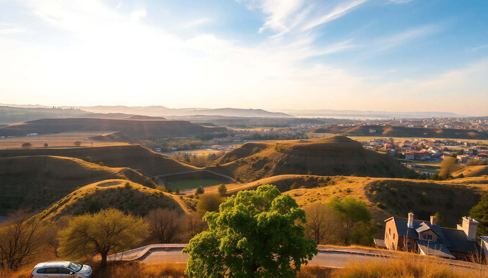

7-Day Turkey Itinerary: Istanbul, Cappadocia, Pamukkale & Ephesus

I squeezed Istanbul, Cappadocia, Pamukkale, and Ephesus into seven days and came back exhausted but satisfied. This itinerary is tight—you’ll fly between cities, skip the bus, and make hard choices about what to skip. I’ll tell you exactly what worked, what didn’t, and where I’d spend more time if I had it.
Is seven days enough for all four destinations?
Barely, but yes—if you’re efficient. I flew between every leg instead of taking overnight buses, which saved time but cost more. The trick is to treat Istanbul as your bookend (Day 1 and Day 7), then cluster Cappadocia, Pamukkale, and Ephesus in the middle with short flights.
- Day 1: Arrive in Istanbul, stay in Sultanahmet near Hagia Sophia and the Blue Mosque.
- Day 2: Morning flight to Cappadocia (Kayseri or Nevşehir airport). Stay in Göreme.
- Day 3: Hot air balloon at dawn, then Red Tour covering Göreme Open-Air Museum, Uçhisar Castle, and Paşabağ.
- Day 4: Fly from Cappadocia to Denizli (for Pamukkale). Visit Pamukkale in the afternoon. Drive to Selçuk.
- Day 5: Full day at Ephesus and House of the Virgin Mary. Stay in Selçuk.
- Day 6: Fly from Izmir back to Istanbul. Explore Karaköy and Galata.
- Day 7: Last morning in Istanbul—hit Grand Bazaar early—then depart.
What’s the best way to get between these cities?
Fly. Domestic flights in Turkey are cheap and frequent. I booked Turkish Airlines and Pegasus for Istanbul–Kayseri, Kayseri–Denizli, and Izmir–Istanbul. Each leg cost about $40–60 one-way with a small checked bag.
- Istanbul to Cappadocia: Fly into Kayseri Erkilet Airport (ASR) or Nevşehir Kapadokya Airport (NAV). Both are 45–60 minutes from Göreme. Arrange a shuttle through your hotel—Göreme Inn arranged mine for €10.
- Cappadocia to Pamukkale: No direct flights. I flew Kayseri to Denizli (Çardak Airport) with a layover in Istanbul. Total travel time was 5 hours including layover—still faster than the 10-hour bus.
- Pamukkale to Ephesus: Rented a car from Denizli airport for €30/day. Drove 2.5 hours to Selçuk via the D550 highway. Dropped the car at Izmir Adnan Menderes Airport.
- Ephesus back to Istanbul: Flew from Izmir to Istanbul’s Sabiha Gökçen (SAW) or Istanbul Airport (IST). SAW is closer to Kadıköy if you’re staying on the Asian side.
Which neighborhoods should I stay in?
Istanbul is split by the Bosphorus. Cappadocia is all about cave hotels. Selçuk is small and walkable. Choose based on your vibe.
- Istanbul: I stayed in Sirkeci at Hotel Arcadia Blue—rooms overlook Hagia Sophia. For nightlife, Karaköy (Mama Shelter) is better. Avoid Taksim if you want quiet.
- Cappadocia: Göreme is the tourist hub with the most balloon operators and restaurants. I booked Sultan Cave Suites for the famous terrace photos. If you want less noise, try Ürgüp (Sobek Hotel).
- Selçuk: Walkable to Ephesus. I used Akanthus Hotel—it’s a 10-minute walk from the Ephesus Museum and has a pool. Skip the chain hotels near the highway.
Are the balloon rides and tours worth the hype?
The balloon ride is worth it if you can afford the $150–$200. The Red Tour is optional—you can DIY with a rental car.
- Hot air balloon: Book with Butterfly Balloons or Royal Balloon—they have better safety records than budget operators. We flew at 5:30 AM and watched sunrise over the fairy chimneys. The landing was rough, but the pilot was professional.
- Red Tour: Covers Göreme Open-Air Museum (€15 entry), Uçhisar Castle (€5), Devrent Valley, and Pasabağ. The guide was informative, but the lunch stop was overpriced. If you rent a car, you can hit all these spots in 4 hours.
- Green Tour: I skipped it. It goes to Derinkuyu Underground City and Ihlara Valley—impressive but adds a full day. If you have four days in Cappadocia, do it.
What should I see in Pamukkale and Ephesus?
Pamukkale is a half-day stop. Ephesus deserves a full day. Both are crowded by 10 AM, so go early.
- Pamukkale: Enter at the south gate (near Hierapolis). Walk barefoot on the white travertines—the water is cold. Then climb to Hierapolis for the ancient pool (you can swim over Roman columns for €10 extra). I spent 3 hours total.
- Ephesus: Arrive at the upper gate by 8 AM. Walk downhill past Library of Celsus, Temple of Hadrian, and the Great Theatre. The Terrace Houses (€15 extra) are worth it—mosaics and frescoes are better preserved than Pompeii.
- House of the Virgin Mary: A 15-minute drive from Ephesus. It’s a small stone house, very peaceful. I’m not religious, but I found it moving. Skip the adjacent gift shop.
- Şirince Village: 20 minutes from Selçuk. Cute but touristy. I bought fruit wine at Şirince Şarap Evi—the pomegranate was good.
What’s the best food I ate on this trip?
Turkish food is excellent, but tourist traps are everywhere. I stuck to places locals recommended.
- Istanbul: Çiya Sofrası in Kadıköy—get the lamb tandır and the sour cherry kebab. For street food, Balık Ekmek by the Galata Bridge is a classic. Mikla in Beyoğlu is overpriced and overrated.
- Cappadocia: Dibek in Göreme—try the testi kebab (pottery-clay stew). Old Cappadocia has good pide. Avoid the restaurants on the main square with English menus and photos.
- Selçuk: Ejder Restaurant—order the şaşlık (skewered lamb) and the artichoke with olive oil. Cimrin has decent gözleme for breakfast.
- Pamukkale: There’s no good food near the travertines. Eat before you go or pack snacks. I grabbed a döner at Pamukkale Döner Salonu—it was fine.
How do I handle logistics like eSIM and tickets?
Get an eSIM before you land—airport SIMs are expensive and slow. Book major attractions online to skip queues.
- eSIM: I used Airalo—$12 for 5GB, 7 days. Worked instantly in Istanbul, Cappadocia, and Selçuk. Don’t buy a physical SIM at the airport; it takes 30 minutes and costs triple.
- Museum Pass: The Museum Pass Turkey (€100 for 5 days) covers Hagia Sophia, Topkapi, Ephesus, Hierapolis, and Göreme Open-Air Museum. I saved about €30. Buy it online or at the first museum.
- Tickets: Book Hagia Sophia (€25) and Topkapi (€30) in advance on the official website. For the balloon, book 2 weeks ahead in summer—I used GetYourGuide and it was seamless.
- Transport: The Istanbulkart (€1.50 + top-up) works on trams, ferries, and buses. Get one at a kiosk near Sultanahmet Tram Stop.
FAQ
Is it safe to travel to Turkey right now? Yes, I felt safe everywhere. Istanbul is crowded but not dangerous—watch for pickpockets in the Grand Bazaar and on trams. Cappadocia and Selçuk are very quiet. Avoid the Syrian border regions (far southeast), but your itinerary doesn’t go near them.
Do I need a visa for Turkey? Most nationalities need an e-Visa ($50 USD). Apply at evisa.gov.tr—it takes 5 minutes. Print it or save the PDF on your phone. I was asked for it at check-in for my flight from the US.
Can I do this trip with kids or older adults? Yes, but adjust the pace. Skip the balloon (kids under 6 can’t fly). Pamukkale’s travertines are slippery—wear water shoes. Ephesus has uneven marble paths; a walking stick helps. I saw families with strollers in Istanbul but not in Cappadocia.
Conclusion
- Fly between cities—buses eat up daylight. Budget $150–$200 for domestic flights.
- Stay in Sultanahmet (Istanbul) and Göreme (Cappadocia) for convenience.
- Book the balloon and Museum Pass in advance to save time and money.
- Skip the Green Tour if you’re short on days—DIY Cappadocia’s highlights.
- Eat at local spots like Çiya Sofrası and Dibek—avoid anything with a photo menu.